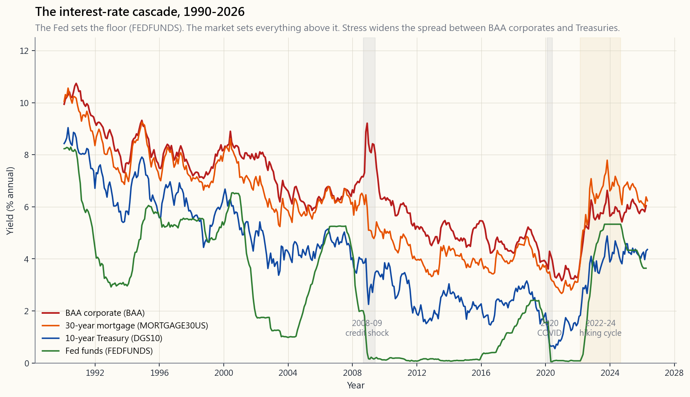
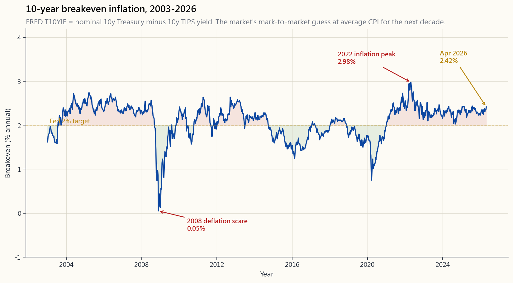

Week 18: Interest Rates — What the Fed Does, What the Market Does, and How Rates Flow Into Asset Prices
1. Why This Is Important
There is one number that prices every other number in finance, and it is the discount rate. The discount rate is built out of two pieces: the risk-free Treasury yield, and a credit/equity spread on top. Move the Treasury yield, and *every dollar of every future cash flow on the planet* — your mortgage, your stocks, your private equity fund's NAV, your country's pension liability, the lease on the warehouse next door — silently reprices. There is no asset that sits outside this gravitational field.
The Federal Reserve does not set this number directly. The Fed sets one rate (the overnight federal-funds rate) on one day every six or seven weeks, and the market does the rest. Mortgage rates, the 10-year Treasury, BAA corporate yields, junk-bond spreads, the dollar, and equity multiples all adjust without permission. The Fed plants a flag at the short end; the market builds the curve.
You need to internalise four things from this lesson.
earnings growing at 3% is worth one number at a 4% discount rate and a very different number at an 8% discount rate. Same business, same earnings, different price. The interactive at the end of this lesson lets you slide the discount rate across a typical long-duration cash flow and watch present value collapse. Do that exercise once — really do it, with the slider — and you will never again ask "why did the market drop on the Fed announcement?"
pay on your mortgage, what an investment-grade firm pays on its bonds, and what the Treasury pays at the 10-year auction are market rates. They are influenced by Fed policy but are not set by it. The cascade chart in §2.1 shows the four layers — funds, 10-year, 30-year mortgage, BAA — and how the spread between them widens in stress and during regime change.
yield in a 5% inflation world is the same real return as 0% in a 0% inflation world. The market separates the two through the TIPS breakeven (§2.3). When 2022 happened, nominal yields tripled but real yields went from -1% to +2%. The +3% real-rate move is what crushed long-duration tech, not the nominal headline.
The first was Volcker in 1981, ending double-digit inflation by ratcheting the funds rate to 20% and triggering the four-decade bond bull market. The second is 2022 onward, the end of the zero-bound era. The investors holding 60/40 portfolios in 2026 have spent their whole working career on one side of one regime. They need to know what the other side feels like.
2. What You Need to Know
2.1 The Rate Cascade — Fed Funds, 10-Year, Mortgage, BAA
The interest-rate universe is not one number. It is a layered hierarchy that the cascade chart makes visible.

Read the chart from the bottom up.
- Fed funds (FEDFUNDS, green) is what banks charge each other
- 10-year Treasury (DGS10, blue) is the auctioned market yield on
- 30-year mortgage (MORTGAGE30US, orange) sits on top of the 10-year
- BAA corporate (BAA, red) is the lowest-rung investment-grade
What you should take away: the Fed sets one rate, and four other rates move because of it but not in lock-step with it. Understanding which spread is widening, and why, is most of what serious macro analysis actually does.
2.2 The Discount Rate Is the Universal Denominator
Every valuation you will ever see — DDM, DCF, P/E, NAV, IRR — is arithmetic on top of one assumption: the discount rate $r$. We met the simplest form back in Week 5. The Gordon growth model says a perpetuity that pays $D$ next period, growing at $g$ forever, is worth
$$ P = \frac{D}{r - g} $$
Three lines of algebra contain most of what equity valuation is. Notice what happens at the limits.
- $r = 4\%, g = 0\%$ -> $P/D = 25$. A typical bond-like stock.
- $r = 6\%, g = 2\%$ -> $P/D = 25$. Same multiple, totally different
- $r = 4\%, g = 3\%$ -> $P/D = 100$. The "long-duration growth" multiple
- $r = 8\%, g = 3\%$ -> $P/D = 20$. Same business, +400 bps of discount,
The 2022 collapse in long-duration tech was exactly this last move. Nominal 10-year Treasury yields rose ~250 bps and equity risk premia widened ~150 bps. A 4-percentage-point lift in the discount rate cuts the present value of a long-dated cash-flow stream by roughly half. It did. The interactive at the end of this lesson computes $P/(r-g)$ live so you can stop arguing with the chart and start sliding the slider.
The same denominator drives bond duration (Week 5), real-estate cap rates, private-equity NAV marks, and pension liabilities. Everything financial is a present-value calculation in disguise. The discount rate is the asset-pricing kernel; everything else is decoration.
2.3 Real Rates and TIPS Breakevens
Nominal yield = real yield + expected inflation. The decomposition
matters because borrowers and lenders both care about purchasing
power, not headline numbers. The Treasury issues two parallel debt
instruments: nominal Treasuries (DGS10) and inflation-protected
Treasuries (TIPS). The yield difference between them is the
10-year breakeven inflation rate, FRED series T10YIE.

Three points jump out.
negative — the market briefly priced in falling prices for a decade. That single print is why the Fed went to QE in early 2009; negative breakevens were the deflation alarm bell.
CPI, the 10-year breakeven never broke 3%. The bond market believed throughout that the Fed would eventually crush inflation back to target. That belief was right and it kept long-rate panic from becoming a self-fulfilling prophecy.
is part of why the funds rate is being eased back from peak.
For an equity investor, real rates matter more than nominal because real cash flows (earnings, dividends, rents) inflate with prices. When real rates rise — as they did sharply in 2022 — long-duration equity collapses more than the nominal-rate move alone would predict.
2.4 The 1981 Volcker Peak and the 2020 Zero Bound — Two Regime Breaks
If you compress 60 years of US monetary history into two events, they are these.
In October 1979 through July 1981, Paul Volcker walked into the Fed determined to break double-digit inflation. He did it by letting the funds rate go where it had to: it peaked above 19% in mid-1981. The 10-year Treasury yield peaked at 15.8%. The economy went into a brutal double-dip recession. Inflation broke. And the bond market began a forty-year bull run that did not end until July 2020, when the 10-year yield hit 0.55%. Anyone who bought the long bond in 1981 and held through 2020 made an annualised total return that beat the S&P 500.
In March 2020 through 2022, the Fed cut the funds rate to zero, expanded the balance sheet by $4.6 trillion, and held real rates deeply negative. Asset prices went vertical. Long-duration equity, SPACs, crypto, residential real estate — everything sensitive to the discount rate behaved like the discount rate had been set to zero, because in real terms it had.
These two events bracket the *passive 40-year regime*. The "passive index investing always wins" claim that animates Bogle, Buffett, and the entire ETF industry is built on top of the 1981-2020 bond bull market and the disinflation it carried with it. The strategy works. But the strategy also sat on top of a once-in-history regime backdrop, and the central lesson is that regime backdrops change.
The vol-tail-wags-dog point connects directly: Volcker had to break the bond market to break inflation. In 2022, the Fed had to risk breaking equities to break post-COVID inflation. When the Fed pulls the rate lever hard, the vol tail wags the policy dog. SVB in March 2023 was exactly this — a regional bank duration-mismatched into the hiking cycle, then run on by a Twitter-coordinated depositor base in 36 hours. The Fed's BTFP backstop arrived the next weekend.
2.5 The 2022-2024 Hiking Cycle in Detail
The numbers are worth memorising as a calibration set.
- March 2022: funds rate moves from 0-0.25% to 0.25-0.50%. First
- November 2022: funds rate at 3.75-4.00% after four consecutive
- July 2023: peak funds rate of 5.25-5.50%.
- March 2023: SVB, Signature, First Republic. Three banks fail in
- 2024: first cut in September (50 bps), then 25-bps cuts through
- April 2026: funds rate has settled; the breakeven is back near
Three things this cycle taught.
Hikes that began in March 2022 hit residential housing and small business credit hardest in late 2023 and 2024.
cycle, not during it. The S&P bottomed in October 2022, eight months before the peak funds rate. Markets price the discount rate forward.
its price from August 2020 to October 2023. That is bigger than most equity bear markets. Bonds are not "safe."
2.6 Growth Stocks vs Value Stocks Under Rate Changes
Equity duration is real, even though we never quote it. A stock whose earnings grow at 3% with most of its cash flow inside the next five years has a low duration; the discount rate doesn't move it much. A stock whose earnings grow at 25% with the bulk of its cash flow expected ten or twenty years out has a very high duration — it is essentially a long-dated zero-coupon bond.
Mechanically, **growth stocks are long duration. Value stocks are short duration.** When rates rise:
- Growth multiples compress hard. The Nasdaq-100 fell 33% in 2022
- Value stocks (banks, utilities, industrials) have shorter cash-flow
- Bonds, of course, lose price proportionally to duration: 10-year
This is why "growth vs value" rotates with the rate cycle, not with investor sentiment. The interactive at the end of this lesson includes a side panel showing exactly how a +100 bps rate move hits four representative cash-flow streams: a 10-year bond, a 30-year bond, a high-growth equity (4% growth, 10-year duration), and a value equity (1% growth, 5-year duration).
The barbell intuition survives this rotation: a long position in short-duration value plus a small allocation to convex long-duration growth gives you both regime payoffs without betting on which regime wins. Pure long-duration tech would have been a career-ender in 2022; pure value would have missed every great investment of the prior decade. The barbell wins because the regime is unknowable and rate moves are large.
3. Common Misconceptions
funds rate. Mortgages are priced off the 10-year Treasury plus an MBS spread. Both pieces are market-determined.
the early phase of a rate-hiking cycle, when hikes signal a healthy economy, equities can rise alongside rates. The 2004-06 cycle is the classic example. What matters is whether real rates rise faster than expected growth.
Only at moderate levels and only sometimes. Above ~4% inflation, equity multiples compress sharply (1970s, 2022). Stocks are real assets, but they are also long-duration discounted cash flows, and the discount-rate effect dominates above ~3% inflation.
bonds whose real yield can rise. In 2022 TIPS lost ~12% of principal value because the real-yield component rose, even though they did exactly what they were supposed to on the inflation leg.
True for nominal terms, false for real terms. A 30-year bond bought at 1% yield in 2020 will repay every nominal dollar but is locked into a real return of roughly -1% per year for thirty years against 2026 inflation expectations.
terms during inflation. From 2020 to 2024 a dollar in a 0%-yielding bank account lost ~17% of purchasing power. Cash is a position, not a default. The four-tranche framework explicitly carves out liquidity and T-bills, separately.
2009-2017 produced no consumer inflation. The 2020-21 round produced the biggest inflation in 40 years. The difference was fiscal: 2020-21 QE was paired with $5+ trillion of fiscal transfers that put cash directly in consumer hands. QE alone moves bank reserves, not prices.
preceded every recession since 1955 with one ambiguous exception — that is a high hit rate, not a guarantee. The 2022-25 inversion is the longest on record and produced a soft landing rather than a classic NBER recession.
is the world's reserve currency; rate differentials drive the dollar, the dollar drives multinational earnings (~40% of S&P 500 revenue is non-US), and the dollar drives commodity prices. The Bank of Japan's 2024 policy shift was a meaningful S&P 500 input.
from 1900 to 1980. They averaged around 0% from 2008 to 2022. There is no single "normal" — the regime defines the level. The regime-change point applies again here.
4. Q&A Section
Q: If I had to watch only one rate, which one? A: The 10-year Treasury yield. It is the single best summary of every piece of information in the rate market — Fed policy expectations, term premium, real growth expectations, and inflation expectations. It is quoted continuously, has no credit spread, and is the discount rate everyone references.
**Q: What's the difference between the federal funds rate and the "discount rate"?** A: Confusing terminology. The federal funds rate is the overnight interbank lending rate the Fed targets. The Fed's discount rate is the (slightly higher) rate the Fed charges banks that borrow directly from the discount window. In practice the discount window is a backstop; the funds rate is the headline tool. When this lesson says "discount rate" without qualifier, it means the financial-economics discount rate $r$ used in DCF, not the Fed window rate.
Q: How do I know which way real rates are moving?
A: Subtract the 10-year breakeven (FRED T10YIE) from the nominal
10-year (FRED DGS10). FRED also publishes DFII10 (the 10-year TIPS
yield) directly. Real rate = nominal yield - breakeven. A rising real
rate is the most reliable bear signal for long-duration assets.
Q: Should I lock in fixed-rate or floating-rate debt now? A: This is a personal-finance call, not investment advice, but the framework is: if you expect real rates to rise from here, fix; if you expect them to fall, float. With the 10-year at ~4% and breakevens near 2% in April 2026, real rates are around 2% — roughly the long-run average. Neither aggressive lock-in nor aggressive floating looks asymmetric here.
**Q: What is "term premium" and why is everyone always talking about it?** A: The term premium is the extra yield investors demand to hold a long bond instead of rolling short bonds. Mathematically, it is the piece of the 10-year yield that isn't explained by expected future short rates. From 2014 to 2021 it was roughly zero or negative — bond investors paid a premium for safety. In 2024-25 it has crept back to ~50 bps. A higher term premium means longer-duration assets get discounted more.
Q: Does the Fed actually control inflation? A: It controls the demand side of inflation through interest rates and bank reserves. It does not control supply shocks (oil, chips, shipping). The 2021-22 inflation was 60% supply-driven and 40% demand-driven; the Fed could only attack the demand half. Volcker won in 1981 because demand was the dominant driver. 1973-74 inflation was mostly oil-shock supply, and Burns's rate hikes did less.
Q: Why does the bond market sometimes rally on bad economic news? A: Because bad news shifts the path of expected future short rates lower, raising bond prices. Bonds love recessions. Equities mostly hate them. This is the asymmetric correlation that makes 60/40 work. Week 4 covered this; it is the central piece of why a portfolio diversifier exists at all.
Q: How fast does a Fed hike show up in mortgage rates? A: The 30-year mortgage moves on the expectation of Fed action, not the action itself. A "surprise" 25 bps hike moves mortgages maybe 10-20 bps that week. A change in the expected path — for example, a hawkish dot plot — can move mortgages 50-100 bps in a single afternoon. By the time the Fed acts, the cake is mostly baked.
Q: Are TIPS a free lunch in inflationary periods? A: No. TIPS protect the principal against CPI but their real yield floats with the market. In 2022 the real yield rose 250 bps and TIPS prices fell. They protect against unexpected inflation, not against real-rate normalisation. They are insurance, not magic.
**Q: How should I think about the discount rate for my own portfolio decisions?** A: Pick a personal hurdle rate — the return below which a project isn't worth your time. For most US investors with full-equity-risk exposure, this is the 10-year Treasury yield plus an equity risk premium of 4-5%. So in April 2026, with the 10-year at ~4%, your hurdle is ~8-9%. Anything you allocate to should clear that, or you should not be doing it. Alpha is rare: if you can't articulate a reason your idea clears the hurdle, it doesn't.
Q: Is the 1981-2020 bond bull market really over? A: Probably yes, but "probably" is not "definitely." A second wave of disinflation (driven by AI productivity, demographics, globalisation 2.0) could push the 10-year back below 2%. But the baseline case for the rest of this decade is range-bound 3-5% nominal yields, which is the historical norm. Building a portfolio that needs yields to fall to 1% to work — which most aggressive long-duration tech plays implicitly do — is a regime-dependent bet, and the regime has changed.
Q: Where does this lesson connect to the rest of the course? A: It is the macro engine sitting under Week 5 (bonds), Week 4 (60/40), Week 10 (cycles), Week 11 (behavioural pitfalls during rate shocks), Week 13 (long/short and how it plays in different rate regimes). Every asset has a duration. The discount rate moves all of them. This week is the link.
第18週：利率——美聯儲的行動、市場的反應，以及利率如何影響資產價格
1. 為何此課題至關重要
財務世界中有一個數字，決定著所有其他數字的價值，那就是折現率。折現率由兩部分構成：無風險國債收益率，加上信用／股票溢價。一旦國債收益率移動，地球上每一份未來現金流的每一塊錢——你的按揭、你持有的股票、你私募基金的資產淨值、你所在國家的退休金負債、隔壁倉庫的租約——都會悄然重新定價。沒有任何資產能夠逃脫這個引力場。
美聯儲並不直接設定這個數字。美聯儲設定的是一個利率（隔夜聯邦基金利率），而且每隔六至七週才決定一次，其餘的事情由市場自行完成。按揭利率、10年期國債、BAA公司債收益率、垃圾債券利差、美元匯率，以及股票估值倍數，全部在無需任何宣布的情況下自動調整。美聯儲在短端插上旗幟；市場自行建構整條收益率曲線。
本課有四件事你必須牢記於心。
2. 你需要掌握的知識
2.1 利率級聯——聯邦基金利率、10年期、按揭、BAA
利率世界並非一個單一數字，而是一個層層疊加的體系，級聯圖表使這個體系一目了然。
從下往上解讀圖表。
- 聯邦基金利率（FEDFUNDS，綠色）是銀行之間隔夜拆借的利率，由聯邦公開市場委員會設定目標。這是圖表上唯一一條由美聯儲直接設定的線。從2009至2015年，再到2020至2022年，這條線被釘在零息下限。從2022年3月至2024年中的加息周期，將其從約0%推升至約5.4%。
- 10年期國債（DGS10，藍色）是10年期美國國債的拍賣市場收益率，是全球最受關注的價格。按揭、長期公司債，以及股市折現率，都以此為基準。留意它如何在長期視角下跟隨基金利率走勢，但短期未必同步——10年期國債反映的是短期利率路徑的10年預測加上期限溢價，而非今天聯邦基金利率的翻版。
- 30年期按揭（MORTGAGE30US，橙色）位於10年期國債之上，差價在平靜市場中壓縮（約150個基點），在壓力時期擴大（2008-09年及2022-23年均超過250個基點）。該差價反映了提前還款風險、按揭抵押證券投資者需求，以及銀行承接能力。
- BAA公司債（BAA，紅色）是投資級公司債的最低層次收益率。其相對10年期國債的差價，就是市場對違約風險的判斷。在2008-09年，差價從約170個基點暴擴至約600個基點。2026年4月，差價回到約190個基點附近。
2.2 折現率是通用分母
你將會看到的每一個估值方法——股息折現模型、現金流折現法、市盈率、資產淨值、內部回報率——都是建立在同一個假設之上的運算：折現率$r$。我們在第5週已接觸過最簡單的形式。高登增長模型指出，一個下期支付$D$、永久以$g$速度增長的永續年金，其價值為
$$ P = \frac{D}{r - g} $$
短短三行代數，涵蓋了股票估值的大部分精髓。留意極端情況下會發生什麼。
- $r = 4\%, g = 0\%$ -> $P/D = 25$。典型的債券類股票。
- $r = 6\%, g = 2\%$ -> $P/D = 25$。相同倍數，截然不同的故事。較高增長抵消了較高折現。
- $r = 4\%, g = 3\%$ -> $P/D = 100$。2020-21年世界所見的「長存續期增長」倍數。
- $r = 8\%, g = 3\%$ -> $P/D = 20$。同一家企業，折現率升高400個基點，倍數壓縮80%。
同樣的分母驅動著債券存續期（第5週）、房地產資本化率、私募基金的資產淨值標記，以及退休金負債。所有金融事物，本質上都是現值計算。折現率就是資產定價的核心機制；其他一切都只是點綴。
2.3 實際利率與通脹保值債券盈虧平衡點
名義收益率 = 實際收益率 + 預期通脹。這個分解至關重要，因為借款人和貸款人都關心購買力，而非表面數字。財政部發行兩種平行的債務工具：名義國債（DGS10）和通脹保值國債（TIPS）。兩者收益率之差，就是10年期盈虧平衡通脹率，FRED數據系列T10YIE。
三個要點一目了然。
對於股票投資者而言，實際利率比名義利率更重要，因為實際現金流（盈利、股息、租金）會隨物價同步上升。當實際利率急升——如2022年——長存續期股票的跌幅，遠超單純的名義利率移動所能預示的程度。
2.4 1981年沃克爾峰值與2020年零利率下限——兩次制度性轉折
若將美國60年的貨幣政策歷史壓縮成兩個事件，那便是以下這兩個。
1979年10月至1981年7月，保羅·沃克爾走進美聯儲，決心打破兩位數通脹。他的做法是讓基金利率自由攀升至必要的水平：1981年中，利率峰值超過19%。10年期國債收益率峰值達15.8%。經濟陷入嚴酷的雙底衰退。通脹最終被打破。債券市場開始了長達40年的牛市，直至2020年7月10年期國債收益率觸及0.55%才告終。任何在1981年買入長期債券並持有至2020年的投資者，其年化總回報都跑贏了標普500指數。
2020年3月至2022年，美聯儲將基金利率削減至零，在18個月內擴大資產負債表4.6萬億美元，並將實際利率維持在深度負值。資產價格垂直上升。長存續期科技股、特殊目的收購公司、加密貨幣、住宅房地產——所有對折現率敏感的事物，其表現猶如折現率被設定為零，因為以實際值計算，確實如此。
這兩個事件劃定了被動型40年制度的邊界。「被動指數投資永遠勝出」的論斷——博格爾、巴菲特以及整個交易所買賣基金行業的信條——建立在1981至2020年的債市牛市及其帶來的通脹下行之上。這個策略是有效的。但這個策略同樣依託於一個歷史上千載難逢的制度背景，而核心教訓在於：制度背景會改變。
波動性尾部反過來主導政策的觀點直接相關：沃克爾必須打破債券市場，才能打破通脹。2022年，美聯儲必須冒著打破股市的風險，才能打破新冠疫情後的通脹。當美聯儲大力拉動利率槓桿，波動性尾部就會反過來搖動政策之狗。2023年3月矽谷銀行的倒閉，正是這一現象的縮影——一家在存續期上嚴重錯配的地區銀行，在36小時內被一群在Twitter上協調行動的存款人擠提。美聯儲的銀行定期融資計劃（BTFP）在翌週末緊急推出。
2.5 2022-2024年加息周期詳述
以下數字值得記憶，作為一套校準參考。
- 2022年3月：基金利率從0-0.25%升至0.25-0.50%。三年來首次加息。
- 2022年11月：連續四次加息75個基點後，基金利率達3.75-4.00%。收緊步伐為1981年以來最快。
- 2023年7月：基金利率峰值5.25-5.50%。
- 2023年3月：矽谷銀行、Signature銀行、第一共和銀行。三家銀行在一週內相繼倒閉。美聯儲推出銀行定期融資計劃作為後盾，並繼續加息。
- 2024年：9月首次減息50個基點，其後至年底每次減息25個基點。基金利率在2024年底收於4.25-4.50%。
- 2026年4月：基金利率趨於穩定；盈虧平衡點回到接近美聯儲2%目標的水平（見§2.3）。收益率曲線自2022年中至2025年初持續倒掛，現已恢復正常的正斜率形態。
2.6 利率變化下的增長股與價值股
股票存續期是真實存在的，即使我們從不直接引用這個數字。一家盈利增長3%、大部分現金流在未來五年內實現的股票，存續期較短；折現率變化對其影響不大。一家盈利增長25%、大部分現金流預計在十年乃至二十年後才實現的股票，存續期則極長——它本質上是一張長期零息債券。
從機制上看，增長股是長存續期資產，價值股是短存續期資產。當利率上升：
- 增長股倍數急劇壓縮。2022年納斯達克100指數下跌33%，標普500指數下跌18%，羅素2000價值指數僅跌14%。盈利季相同，對$r$的敏感程度不同。
- 價值股（銀行、公用事業、工業股）現金流存續期較短，往往直接受益於較陡峭的收益率曲線。
- 債券方面，價格跌幅與存續期成正比：2022年10年期國債下跌18%，30年期下跌33%。
這種輪換之下，槓鈴策略直覺依然成立：在短存續期價值股持有長倉，同時配置小量凸性長存續期增長股，讓你同時享受兩種制度的回報，而無需押注哪種制度會勝出。純粹押注長存續期科技股，在2022年足以毀掉一個職業生涯；純粹押注價值股，則錯過了前十年每一個偉大的投資機會。槓鈴策略勝出，因為制度走向難以預測，而利率波動幅度巨大。
3. 常見誤解
4. 問答環節
問：如果只能追蹤一個利率，應該看哪個？ 答：10年期國債收益率。它是利率市場所有信息的最佳單一摘要——美聯儲政策預期、期限溢價、實際增長預期，以及通脹預期。它持續報價，不含信用利差，是所有人引用的折現率基準。
問：聯邦基金利率與「折現率」有何分別？ 答：術語上容易混淆。聯邦基金利率是美聯儲設定目標的隔夜銀行間拆借利率。美聯儲自己的貼現率是向直接從貼現窗口借款的銀行收取的（略高）利率。實際操作中，貼現窗口是後備機制；基金利率才是主要工具。本課所說的「折現率」若無特別說明，均指現金流折現法中使用的金融經濟學折現率$r$，而非美聯儲窗口利率。
問：如何判斷實際利率的走向？
答：以名義10年期（FRED DGS10）減去10年期盈虧平衡點（FRED T10YIE）。FRED亦直接發布DFII10（10年期通脹保值債券收益率）。實際利率 = 名義收益率 - 盈虧平衡點。實際利率上升，是長存續期資產最可靠的熊市信號。
問：現在應該選擇固定利率還是浮動利率貸款？ 答：這是個人理財決策，並非投資建議，但框架如下：若預期實際利率從此繼續上升，宜選固定；若預期下降，宜選浮動。以2026年4月約4%的10年期國債和約2%的盈虧平衡點計算，實際利率約2%——大致為長期平均水平。無論是積極鎖定固定利率還是積極選擇浮動利率，目前看來均無明顯不對稱優勢。
問：「期限溢價」是什麼，為何人人都在談論它？ 答：期限溢價是投資者持有長期債券而非滾動短期債券所要求的額外收益率。從數學上看，它是10年期收益率中無法由預期未來短期利率解釋的部分。從2014至2021年，它大致為零甚至負值——債券投資者為安全資產支付了溢價。2024-25年，它逐漸回升至約50個基點。期限溢價越高，意味著長存續期資產被折現得更多。
問：美聯儲真的能控制通脹嗎？ 答：它透過利率和銀行儲備控制通脹的需求面。它無法控制供應衝擊（石油、晶片、航運）。2021-22年的通脹約60%由供應驅動，40%由需求驅動；美聯儲只能攻擊需求的一半。沃克爾1981年得以成功，因為需求是主要驅動力。1973-74年的通脹主要由石油衝擊的供應面驅動，伯恩斯的加息效果有限。
問：為何債市有時在壞消息公布後反彈？ 答：因為壞消息會將預期未來短期利率的路徑往下移，從而推高債券價格。債券偏愛衰退，股市大多討厭衰退。這種不對稱相關性正是六四比率投資組合能夠運作的核心原因。第4週已涵蓋這一點；這是投資組合分散工具存在意義的核心所在。
問：美聯儲加息多快會反映在按揭利率上？ 答：30年期按揭在美聯儲採取行動之前便已提前移動，反映的是市場對加息的預期。「出人意表」的25個基點加息，或許當週只令按揭利率移動10至20個基點。但預期路徑的改變——例如一份鷹派的利率點陣圖——可以在單一下午令按揭利率移動50至100個基點。待美聯儲正式行動時，蛋糕大多已經烤好了。
問：通脹保值債券在通脹時期是免費午餐嗎？ 答：並非如此。通脹保值債券保護的是本金免受消費物價指數侵蝕，但其實際收益率隨市場浮動。2022年實際收益率上升250個基點，通脹保值債券價格下跌。它們保護的是意外通脹，而非實際利率正常化的風險。它們是保險，不是魔法。
問：在個人投資組合決策中，應如何考慮折現率？ 答：為自己設定一個門檻回報率——低於此回報率的項目不值得投入時間。對大多數持有全股票風險敞口的美國投資者而言，這個門檻是10年期國債收益率加上4至5%的股票風險溢價。因此，在2026年4月，10年期國債約4%的情況下，你的門檻約為8至9%。任何你配置的資產都應超過這個門檻，否則便不應投入。阿爾法是稀缺的：如果你無法闡明一個理由說明你的想法能夠超越這個門檻，那它就達不到。
問：1981至2020年的債市牛市真的結束了嗎？ 答：很可能是的，但「很可能」並非「肯定」。通脹的第二波下行（由人工智能生產力、人口結構、全球化2.0驅動）可能將10年期國債收益率重新推低至2%以下。但未來十年的基線情境是名義收益率在3至5%之間波動，這也是歷史常態。建立一個需要收益率回落至1%才能奏效的投資組合——大多數激進的長存續期科技股押注隱含地如此——是一個依賴制度背景的賭注，而制度已經改變。
問：本課與課程其他部分有何關聯？ 答：它是支撐第5週（債券）、第4週（六四比率）、第10週（周期）、第11週（利率衝擊中的行為陷阱）、第13週（長短倉及其在不同利率制度下的表現）的宏觀引擎。每一種資產都有存續期。折現率移動所有資產。本週是這一切的連接點。
第18週：利率——聯準會的操作、市場的反應，以及利率如何傳導至資產價格
1. 為何這個主題至關重要
在金融世界裡，有一個數字主宰著其他所有數字，那就是折現率。折現率由兩個部分構成：無風險的國庫券殖利率，以及在此之上加計的信用／股票利差。只要國庫券殖利率移動，全球每一分未來現金流——你的房貸、你的股票、你的私募股權基金淨值、你所在國家的退休金負債、隔壁倉庫的租約——全部都會悄悄重新定價。沒有任何資產能夠逃離這個引力場。
聯準會並不直接設定這個數字。聯準會設定的是一個利率（隔夜聯邦資金利率），而且每六到七週才設定一次，其餘的事都由市場完成。房貸利率、10年期國庫券殖利率、BAA級公司債殖利率、垃圾債券利差、美元匯率，以及股票估值倍數，全部都在無需任何人授權的情況下自行調整。聯準會在短端插下旗幟，市場則建構出整條殖利率曲線。
從這堂課中，你需要內化四件事。
2. 你需要掌握的知識
2.1 利率瀑布——聯邦資金利率、10年期、房貸利率、BAA級公司債
利率的世界不是一個數字，而是一個層次分明的階層結構，瀑布圖讓這個結構清晰可見。
從下往上讀這張圖。
- 聯邦資金利率（FEDFUNDS，綠色）是銀行彼此隔夜拆借的利率，由聯邦公開市場委員會設定目標。這是圖上唯一由聯準會直接設定的一條線。從2009年至2015年，以及2020年至2022年，這條線被釘在零利率下限。2022年3月至2024年中的升息循環，將其從約0%推升至約5.4%。
- 10年期公債殖利率（DGS10，藍色）是10年期美國公債拍賣形成的市場殖利率，是全球最受關注的價格。房貸利率、長期公司債，以及股市折現率，全部以此為基準。注意它在長期窗口中如何跟隨聯邦資金利率，但短期並不亦步亦趨——10年期殖利率是對未來短期利率路徑的10年期預測加上期限溢酬，而非當前聯邦資金利率的翻版。
- 30年期房貸利率（MORTGAGE30US，橙色）疊加在10年期殖利率之上，利差在平靜市場中收窄（約150個基點），在壓力時期擴大（2008至2009年及2022至2023年均超過250個基點）。這個利差反映了提前還款風險、不動產抵押貸款證券投資人的需求，以及銀行的承接能力。
- BAA級公司債（BAA，紅色）是投資等級公司債殖利率的最低一級。其與10年期公債的利差，正是市場對違約風險的判讀。2008至2009年，這個利差從約170個基點爆增至約600個基點。2026年4月，回到約190個基點附近。
2.2 折現率是普世的分母
你將看到的每一種估值方式——股利折現模型、現金流量折現法、本益比、淨值、內部報酬率——都是建立在同一個假設之上的運算：折現率$r$。我們在第5週見過最簡單的形式。Gordon成長模型指出，一個下期支付股利$D$、永久以$g$成長的永續年金，價值為
$$ P = \frac{D}{r - g} $$
三行代數包含了股票估值的大部分精髓。注意極端情況下會發生什麼。
- $r = 4\%,\ g = 0\%$ → $P/D = 25$。典型的類債券型股票。
- $r = 6\%,\ g = 2\%$ → $P/D = 25$。同樣的估值倍數，完全不同的故事。較高的成長抵消了較高的折現率。
- $r = 4\%,\ g = 3\%$ → $P/D = 100$。2020至2021年全球所見的「長存續期間成長股」倍數。
- $r = 8\%,\ g = 3\%$ → $P/D = 20$。同一家公司，折現率提高400個基點，估值倍數壓縮了80%。
同樣的分母驅動著債券存續期間（第5週）、不動產資本化率、私募股權基金淨值標記，以及退休金負債。所有金融事物都是偽裝成不同形式的現值計算。折現率就是資產定價的核心；其他一切都只是裝飾。
2.3 實質利率與TIPS損益平衡通膨率
名目殖利率 = 實質殖利率 + 預期通膨率。這個拆分至關重要，因為借貸雙方都在意的是購買力，而非表面數字。財政部發行兩種並行的債務工具：名目公債（DGS10）與通膨保值公債（TIPS）。兩者的殖利率差異，即為10年期損益平衡通膨率，FRED數列代碼為T10YIE。
三個現象特別突出。
對於股票投資人而言，實質利率比名目利率更重要，因為實質現金流（盈餘、股利、租金）會隨物價通膨調整。當實質利率上升——如2022年的大幅攀升——長存續期間股票的跌幅會超過名目利率變動單獨所能預測的程度。
2.4 1981年伏克爾高峰與2020年零利率下限——兩次制度性斷裂
若將60年的美國貨幣史壓縮為兩個事件，就是以下這兩個。
1979年10月至1981年7月，保羅·伏克爾走進聯準會，決心打破雙位數通膨。他做到了，方式是讓聯邦資金利率去到它必須去的地方：1981年中期峰值超過19%。10年期公債殖利率峰值達到15.8%。經濟陷入殘酷的雙底衰退。通膨被打破。然後債券市場開始了長達四十年的多頭行情，直至2020年7月10年期殖利率觸及0.55%才告終。任何人若在1981年買入長期公債並持有至2020年，其年化總報酬都超越了標普500指數。
2020年3月至2022年，聯準會將聯邦資金利率降至零，資產負債表在18個月內擴張4.6兆美元，並將實質利率維持在深度負值。資產價格垂直上揚。長存續期間科技股、特殊目的收購公司、加密貨幣、住宅不動產——所有對折現率敏感的事物，表現得就像折現率被設定為零一樣，因為在實質上確實如此。
這兩個事件框住了被動投資的40年制度。激勵了柏格、巴菲特，以及整個指數股票型基金產業的「被動指數投資必勝」論點，是建立在1981至2020年債券多頭市場及其所帶來的通膨下行趨勢之上的。這個策略是有效的。但這個策略同時也座落在一個歷史性的制度背景之上，而核心教訓在於：制度背景會改變。
波動率尾巴搖動政策狗的觀點直接相連：伏克爾必須打破債券市場才能打破通膨。2022年，聯準會必須冒著打破股市的風險才能打破疫後通膨。當聯準會強力拉動利率槓桿，波動率這條尾巴就會搖動政策這隻狗。2023年3月的矽谷銀行正是如此——一家存續期間錯配到升息循環中的地區性銀行，在36小時內遭到以Twitter為協調平台的存款人擠兌。聯準會的銀行定期融資計畫（BTFP）在下個週末緊急推出。
2.5 2022至2024年升息循環詳解
這些數字值得牢記，作為校準基準。
- 2022年3月：聯邦資金利率從0至0.25%升至0.25至0.50%。三年來首次升息。
- 2022年11月：連續四次升息75個基點後，聯邦資金利率達到3.75至4.00%。自1981年以來最快的緊縮速度。
- 2023年7月：聯邦資金利率峰值5.25至5.50%。
- 2023年3月：矽谷銀行、Signature銀行、第一共和銀行。三家銀行在一週內倒閉。聯準會推出銀行定期融資計畫（BTFP）並繼續升息。
- 2024年：9月首次降息50個基點，年底前再降息25個基點。聯邦資金利率以4.25至4.50%結束2024年。
- 2026年4月：聯邦資金利率趨於穩定；損益平衡通膨率回到聯準會2%目標附近（見第2.3節）。殖利率曲線從2022年中至2025年初的倒掛，恢復為正常的正斜率。
2.6 利率變動下的成長股與價值股
股票存續期間是真實存在的，即使我們從未明確引用。一家盈餘成長率3%、大部分現金流集中在未來五年內的股票，存續期間短，折現率的變動對其影響不大。一家盈餘成長率25%、大部分現金流預期在未來十年或二十年才兌現的股票，存續期間極長——它本質上就是一張長期零息債券。
從機制上看，成長股是長存續期間；價值股是短存續期間。 當利率上升：
- 成長股估值倍數大幅壓縮。那斯達克100指數2022年下跌33%，而標普500下跌18%，羅素2000價值指數僅下跌14%。同一個財報季，不同的折現率$r$敏感度。
- 價值股（銀行、公用事業、工業股）現金流存續期間較短，且往往直接受益於更陡的殖利率曲線。
- 債券當然按存續期間比例跌價：10年期債券2022年跌約18%，30年期跌約33%。
槓鈴直覺在這個輪動中依然成立：買進短存續期間價值股，同時配置少量凸性高的長存續期間成長股，讓你同時持有兩種制度下的收益，而無需押注哪種制度勝出。2022年純做長存續期間科技股足以葬送職業生涯；純做價值股則會錯過過去十年每一筆偉大的投資。槓鈴勝出，因為制度無法預測，而利率移動幅度巨大。
3. 常見迷思
4. 問答單元
問：如果我只能關注一個利率，該看哪一個？ 答：10年期公債殖利率。它是利率市場每一條資訊的最佳單一摘要——聯準會政策預期、期限溢酬、實質成長預期，以及通膨預期。它持續報價、沒有信用利差，而且是所有人引用的折現率基準。
問：聯邦資金利率與「折現率」有何區別？ 答：術語容易混淆。聯邦資金利率是聯準會設定目標的隔夜銀行同業拆借利率。聯準會的貼現率是聯準會向直接向貼現窗口借款的銀行收取的（略高的）利率。實務上，貼現窗口是備用機制；聯邦資金利率才是主要工具。本課在沒有特別說明的情況下提到「折現率」，指的是在現金流量折現法中使用的金融經濟學折現率$r$，而非聯準會的貼現窗口利率。
問：我如何知道實質利率的移動方向？
答：用名目10年期殖利率（FRED DGS10）減去10年期損益平衡通膨率（FRED T10YIE）。FRED也直接發布DFII10（10年期通膨保值公債殖利率）。實質利率 = 名目殖利率 - 損益平衡通膨率。實質利率上升是長存續期間資產最可靠的空頭信號。
問：現在應該選擇固定利率還是浮動利率的借款？ 答：這是個人理財問題，而非投資建議，但框架如下：如果你預期實質利率將從現在起繼續上升，選擇固定；如果你預期下降，選擇浮動。以2026年4月的狀況來看，10年期殖利率約4%，損益平衡通膨率接近2%，實質利率約為2%——大約是長期平均水準。在這個狀況下，大力鎖定固定利率或大力選擇浮動利率，都看不到明顯的不對稱優勢。
問：什麼是「期限溢酬」，為什麼大家總在談它？ 答：期限溢酬是投資人為了持有長期債券而非滾動短期債券所要求的額外殖利率。在數學上，它是10年期殖利率中無法由未來短期利率預期解釋的部分。從2014年至2021年，它大約為零甚至為負——債券投資人為安全性支付了溢價。2024至2025年，它已悄悄回升至約50個基點。較高的期限溢酬意味著長存續期間資產被折現得更多。
問：聯準會真的能控制通膨嗎？ 答：它能透過利率和銀行準備金控制通膨的需求面。它無法控制供給衝擊（石油、晶片、航運）。2021至2022年的通膨約60%由供給驅動、40%由需求驅動；聯準會只能攻擊需求的那一半。伏克爾在1981年勝出，是因為需求是主要驅動力。1973至1974年的通膨主要源於石油供給衝擊，伯恩斯的升息效果有限。
問：為什麼債券市場有時候在壞消息出現時反而上漲？ 答：因為壞消息使預期的未來短期利率路徑降低，從而推升債券價格。債券喜歡經濟衰退，股票大多討厭它。這種不對稱的相關性，正是60/40投資組合能夠發揮作用的原因。第4週討論過這一點；它是投資組合分散化工具存在的核心理由。
問：聯準會升息多快會反映在房貸利率上？ 答：30年期房貸利率的移動是基於對聯準會行動的預期，而非行動本身。一次「出乎意料」的升息25個基點，那週大概只會讓房貸利率移動10至20個基點。而預期路徑的改變——例如偏鷹派的點陣圖——可以在一個下午讓房貸利率移動50至100個基點。等聯準會真正採取行動時，大部分影響早已消化。
問：通膨保值公債在通膨時期是免費的午餐嗎？ 答：不是。通膨保值公債保護的是本金對抗消費者物價指數，但其實質殖利率會隨市場浮動。2022年實質殖利率上升250個基點，通膨保值公債價格下跌。它們防範的是意外通膨，而非實質利率正常化。它們是保險，不是魔法。
問：我應該如何為自己的投資組合決策思考折現率？ 答：設定一個個人門檻報酬率——低於此水準的項目不值得你花時間投入。對於大多數承擔完整股票風險的美國投資人，這個門檻是10年期公債殖利率加上4至5%的股票風險溢酬。因此，以2026年4月10年期殖利率約4%計算，你的門檻約為8至9%。你的每一筆配置都應該能跨越這個門檻，否則就不值得去做。超額報酬阿爾法是罕見的：如果你無法說清楚你的想法為何能超越門檻，那就表示它做不到。
問：1981至2020年的債券多頭市場真的結束了嗎？ 答：可能是的，但「可能」不等於「確定」。第二波通膨下行（由人工智慧生產力、人口結構、全球化2.0推動）可能讓10年期殖利率再度跌破2%。但這個十年剩餘時間的基本情境，是3至5%名目殖利率的區間震盪，這也是歷史常態。建立一個需要殖利率跌回1%才能奏效的投資組合——大多數激進的長存續期間科技股部位隱含地就是這樣——是一個制度依賴型的賭注，而制度已經改變了。
問：這一課與課程其他部分如何銜接？ 答：它是坐落在第5週（債券）、第4週（60/40）、第10週（景氣循環）、第11週（利率衝擊中的行為偏誤）、第13週（多空策略及其在不同利率制度下的表現）之下的總體引擎。每一種資產都有存續期間。折現率牽動所有資產。這一週是串聯整個課程的橋梁。
第18周：利率——美联储的行动、市场的反应，以及利率如何传导至资产价格
1. 为什么这很重要
金融领域有一个数字为其他所有数字定价，那就是折现率。折现率由两部分构成：无风险国债收益率，以及叠加其上的信用/股权利差。国债收益率一动，全球每一笔未来现金流的每一美元——你的房贷、你的股票、你私募基金的净值、你所在国家的养老金负债、隔壁仓库的租约——都会悄然重新定价。没有任何资产能游离于这个引力场之外。
美联储并不直接设定这个数字。美联储设定的是一个利率（隔夜联邦基金利率），且每六到七周才动一次，其余的由市场完成。房贷利率、10年期国债、BAA级公司债收益率、垃圾债券利差、美元汇率和股票估值倍数，都在无需任何授权的情况下自行调整。美联储在短端插下旗帜，市场则构建出整条曲线。
本课你需要内化四件事。
2. 你需要掌握的知识
2.1 利率瀑布——联邦基金利率、10年期国债、房贷利率、BAA级公司债
利率的世界并非一个单一数字，而是一个分层体系，瀑布图使这一体系清晰可见。
从下往上读这张图。
- 联邦基金利率（FEDFUNDS，绿色） 是银行间隔夜互相拆借的利率，由联邦公开市场委员会制定目标区间。这是图中唯一一条由美联储直接设定的线。2009年至2015年以及2020年至2022年，这条线钉在零下限。2022年3月至2024年中的加息周期将其从约0%推至约5.4%。
- 10年期国债（DGS10，蓝色） 是10年期美国国债的市场拍卖收益率，是全球最受关注的价格信号。房贷、长期公司债以及股市折现率均以此为基准。注意它在长周期内跟随联邦基金利率，但短期内并不同步——10年期国债反映的是未来10年短期利率路径的预期加上期限溢价，而非当前联邦基金利率的镜像。
- 30年期房贷（MORTGAGE30US，橙色） 位于10年期国债之上，利差在平稳市场约为150个基点，在压力时期扩大（2008-09年及2022-23年均超过250个基点）。利差反映了提前还款风险、MBS投资者需求以及银行承接能力。
- BAA级公司债（BAA，红色） 是投资级公司债收益率的最低档。其与10年期国债的利差，就是市场对违约风险的实时判断。2008-09年，利差从约170个基点飙至约600个基点。2026年4月，已回落至约190个基点。
2.2 折现率是普遍分母
你将来看到的每一个估值模型——股息折现模型、现金流折现法、市盈率、净值、内部收益率——都是建立在一个假设之上：折现率$r$。我们在第5周已接触过最简单的形式。戈登增长模型认为，一笔每期派发$D$、永续增长$g$的永续年金，其价值为
$$ P = \frac{D}{r - g} $$
三行代数式涵盖了股权估值的大部分精髓。注意边界情形。
- $r = 4\%，g = 0\%$ -> $P/D = 25$。典型的类债券股票。
- $r = 6\%，g = 2\%$ -> $P/D = 25$。相同倍数，完全不同的故事。更高增速抵消了更高折现。
- $r = 4\%，g = 3\%$ -> $P/D = 100$。2020-21年全球所见的"长久期成长股"倍数。
- $r = 8\%，g = 3\%$ -> $P/D = 20$。同一家企业，折现率上升400个基点，估值倍数压缩80%。
同一个分母也驱动着债券久期（第5周）、房地产资本化率、私募股权净值标记以及养老金负债。一切金融资产都是伪装成别的东西的现值计算。折现率就是资产定价的核心机制，其余皆是装饰。
2.3 实际利率与TIPS盈亏平衡利率
名义收益率 = 实际收益率 + 预期通胀。这一分解至关重要，因为借贷双方真正在乎的是购买力，而非表面数字。财政部发行两类平行债务工具：名义国债（DGS10）和通胀保值国债（TIPS）。两者之间的收益率差，就是10年期盈亏平衡通胀率，FRED系列代码为T10YIE。
有三点格外突出。
对股票投资者而言，实际利率比名义利率更重要，因为实际现金流（盈利、股息、租金）会随价格上涨而增加。当实际利率上升——如2022年的急剧上升——长久期股权的跌幅超过仅凭名义利率变动所能预测的幅度。
2.4 1981年沃尔克峰值与2020年零下限——两次政策regime切换
如果把60年美国货币史压缩成两个事件，那就是以下这两个。
1979年10月至1981年7月，保罗·沃尔克走进美联储，下定决心打破两位数通胀。他做到了，方法是任由联邦基金利率升至必要水平：1981年中期峰值超过19%。10年期国债收益率峰值达到15.8%。经济陷入惨烈的双底衰退。通胀被打破。债券市场由此开启了长达四十年的牛市，直至2020年7月10年期国债收益率触及0.55%才告终。1981年买入长期债券并持有至2020年的投资者，年化总收益超过了标普500指数。
2020年3月至2022年，美联储将联邦基金利率降至零，18个月内将资产负债表扩张4.6万亿美元，并使实际利率深度为负。资产价格直线上涨。长久期科技股、SPAC、加密货币、住宅房地产——一切对折现率敏感的资产，其表现都如同折现率被设为零一般，因为从实际意义上说，确实如此。
这两个事件划定了被动投资四十年政策regime的边界。"被动指数投资长期必胜"的论断——这是推动博格、巴菲特以及整个交易所交易基金行业的核心理念——建立在1981年至2020年的债券牛市及其携带的通缩红利之上。这一策略有效。但它同时也依托于一个历史罕见的政策regime背景，而核心教训在于：政策regime的背景会发生改变。
波动率尾巴摇狗身的逻辑与此直接相连：沃尔克必须打破债券市场才能打破通胀。2022年，美联储必须冒险打破股市才能打破疫情后的通胀。当美联储猛拉利率杠杆时，波动率的尾巴反过来摇动政策这条狗。2023年3月的硅谷银行事件正是如此——一家久期严重错配的地区银行，在36小时内被推特协调的储户挤兑。美联储的银行定期融资计划（BTFP）在随后的周末紧急出炉。
2.5 2022-2024年加息周期详解
以下数字值得记住，作为校准基准。
- 2022年3月：联邦基金利率从0-0.25%升至0.25-0.50%。三年来首次加息。
- 2022年11月：经过四次连续加息各75个基点，联邦基金利率达到3.75-4.00%。这是自1981年以来最快的紧缩节奏。
- 2023年7月：联邦基金利率峰值5.25-5.50%。
- 2023年3月：硅谷银行、签名银行、第一共和银行相继倒闭。一周之内三家银行关门。美联储推出银行定期融资计划托底，并继续加息。
- 2024年：9月首次降息50个基点，此后25个基点逐步下调。2024年底联邦基金利率降至4.25-4.50%。
- 2026年4月：联邦基金利率趋于稳定；盈亏平衡利率回归美联储约2%的目标附近（见§2.3）。收益率曲线从2022年中至2025年初的持续倒挂，恢复为正常的正斜率。
2.6 利率变动下的成长股与价值股
股权久期是真实存在的，尽管我们从不直接引用这个数字。一只盈利增速3%、大部分现金流在未来五年内兑现的股票，久期较低；折现率对其影响有限。一只盈利增速25%、大部分现金流预计在十年或二十年后兑现的股票，久期极高——它本质上是一张长期零息债券。
机制上，成长股是长久期资产，价值股是短久期资产。 当利率上升时：
- 成长股估值倍数大幅压缩。纳斯达克100指数2022年下跌33%，标普500下跌18%，罗素2000价值指数仅下跌14%。同一个财报季，不同的利率敏感度。
- 价值股（银行、公用事业、工业）现金流久期较短，且往往直接受益于收益率曲线趋陡。
- 债券当然随久期等比例损失价格：2022年单年10年期债券下跌约18%，30年期债券下跌约33%。
杠铃式配置的直觉在这种轮动中依然成立：持有短久期价值股多头加小仓位凸性长久期成长股，可在两种政策regime中均有所斩获，无需押注哪种regime胜出。纯长久期科技股在2022年足以断送职业生涯；纯价值股则会错过过去十年每一笔伟大的投资。杠铃取胜，因为政策regime不可预判，而利率波动幅度巨大。
3. 常见误区
4. 问答
问：如果只能盯一个利率，盯哪个？ 答：10年期国债收益率。它是利率市场所有信息的最佳汇总——美联储政策预期、期限溢价、实际增长预期和通胀预期。它持续报价，没有信用利差，是所有人引用的折现率基准。
问：联邦基金利率和"折现率"有什么区别？ 答：这是容易混淆的术语。联邦基金利率是美联储设定目标的银行间隔夜拆借利率。美联储的贴现率是美联储向直接从贴现窗口借款的银行收取的利率（略高于联邦基金利率）。实践中，贴现窗口只是兜底工具；联邦基金利率才是头条工具。本课在不加限定语的情况下提及"折现率"，指的是现金流折现法中使用的金融经济学折现率$r$，而非美联储贴现窗口利率。
问：如何判断实际利率的走向？
答：用名义10年期国债收益率（FRED DGS10）减去10年期盈亏平衡利率（FRED T10YIE）。FRED也直接发布DFII10（10年期TIPS收益率）。实际利率 = 名义收益率 - 盈亏平衡利率。实际利率上升是长久期资产最可靠的熊市信号。
问：现在应该选固定利率还是浮动利率负债？ 答：这是个人理财决策，并非投资建议，但框架是：如果你预期实际利率从这里继续上升，选固定；如果你预期下降，选浮动。2026年4月，10年期国债约4%，盈亏平衡利率约2%，实际利率约为2%——大致处于长期均值附近。激进锁定或激进浮动都不存在明显不对称机会。
问：什么是"期限溢价"，为什么大家总在谈论它？ 答：期限溢价是投资者持有长期债券而非滚动持有短期债券所要求的额外收益率。数学上，它是10年期国债收益率中无法用预期未来短期利率解释的部分。从2014年到2021年，这一数字约为零甚至为负——债券投资者为安全资产支付溢价。2024-25年，它已悄然回升至约50个基点。期限溢价越高，意味着长久期资产被折现得越多。
问：美联储真的能控制通胀吗？ 答：它通过利率和银行准备金控制通胀的需求侧。它无法控制供给冲击（石油、芯片、航运）。2021-22年通胀约60%由供给驱动、40%由需求驱动；美联储只能攻打需求的那一半。沃尔克1981年之所以成功，是因为需求是主导因素。1973-74年通胀主要由石油冲击驱动，伯恩斯的加息收效甚微。
问：为什么坏的经济数据有时会导致债券上涨？ 答：因为坏消息会将预期未来短期利率的路径下移，从而推高债券价格。债券喜欢经济衰退。股票大多厌恶经济衰退。这种不对称相关性正是60/40组合有效的原因——多元化配置的组合因此存在。第4周已覆盖这一点；这是投资组合多元化逻辑的核心。
问：美联储加息多快会反映在房贷利率上？ 答：30年期房贷利率随市场对美联储行动的预期而动，而非行动本身。一次"意外"的25个基点加息，当周大约会带动房贷利率上行10-20个基点。而预期路径的变化——例如偏鹰的利率点阵图——可能在一个下午内推动房贷利率50-100个基点。等美联储真正行动时，蛋糕基本上已经烤好了。
问：通胀保值国债（TIPS）在通胀期间是无风险套利吗？ 答：不是。TIPS保护本金不受CPI侵蚀，但其实际收益率随市场浮动。2022年实际利率上升250个基点，TIPS价格随之下跌。它们防范的是意外通胀，而非实际利率的正常化。TIPS是保险，不是魔法。
问：在自己的投资组合决策中，如何思考折现率？ 答：为自己设定一个个人基准回报率——低于这个回报就不值得投入精力的门槛。对于大多数承担完整股票风险的美国投资者，这大约是10年期国债收益率加上4-5%的股权风险溢价。所以在2026年4月，10年期国债约4%，你的门槛约为8-9%。你的每一笔配置都应当越过这道门槛，否则就不应该做。阿尔法极为稀缺：如果你无法清晰说明为何你的想法能超越门槛，那它就达不到。
问：1981-2020年的债券牛市真的结束了吗？ 答：很可能是的，但"很可能"不等于"必然"。第二波通缩（由人工智能生产力提升、人口结构变化、全球化2.0驱动）可能将10年期国债推回2%以下。但本十年余下时间的基准情形是名义收益率在3-5%之间震荡，这也是历史正常水平。构建一个必须依赖收益率跌回1%才能奏效的投资组合——大多数激进长久期科技股押注隐含的正是这一逻辑——是一种押注特定政策regime的行为，而那个regime已经改变了。
问：本课与整个课程的其他部分如何衔接？ 答：这是支撑第5周（债券）、第4周（60/40）、第10周（经济周期）、第11周（利率冲击中的行为偏差）、第13周（多空策略及其在不同利率环境下的表现）的宏观引擎。每一类资产都有久期。折现率移动所有资产。本周是连接一切的纽带。